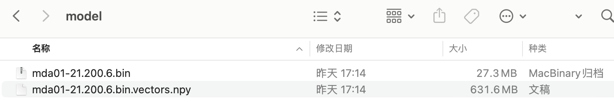

相关内容
一、介绍
使用2001-2021年的管理层讨论与分析mda数据(1.45G)，训练出的中国A股市场词向量模型，词汇量789539， 模型文件650M。可广泛用于经济管理等领域概念(情感)词典的构建或扩展。
训练环境为内存256G的windows服务器(日常办公电脑内存16G居多)， 2.0.0版本cntext库(该版本暂不开源，最新可获取的版本为1.8.4)。在该环境下，我也尝试使用14G的年报数据，训练了两天，跑不出结果，256G的内存基本用光了。所以cntext训练模型，适合的数据规模是1G左右。模型文件
- mda01-21.200.6.bin
- mda01-21.200.6.bin.vectors.npy

参数解读
- mda01-21 使用2001-2021年度的mda数据训练
- 200 嵌入的维度数，即每个词的向量长度是200
- 6 词语上下文的窗口是6
为什么这样确定200和6，可以看这篇 词嵌入技术在社会科学领域进行数据挖掘常见39个FAQ汇总
二、导入模型
需要用到两个自定义函数load_w2v、expand_dictionary，源代码太长，为了提高阅读体验， 放在文末。大家记得用这两个函数前一定要先导入。点击下载本文
#先导入load_w2v、expand_dictionary函数源代码
#读取模型文件
wv = load_w2v(w2v_path='model/mda01-21.200.6.bin')
wv
Loading word2vec model...
<gensim.models.keyedvectors.KeyedVectors at 0x7fcc91900a90>
三、wv的使用
- 查看词汇量
- 查询某词向量
- 查看多个词的均值向量
更多内容，建议查看下gensim库的文档
#词汇量
len(wv.index_to_key)
Run
789539
#查询某词的词向量
wv.get_vector('创新')
Run
array([ 4.34389877e+00, -4.93447453e-01, 2.17293240e-02, 1.90846980e+00,
8.75901580e-01, -7.95542181e-01, -1.12950909e+00, 7.44228721e-01,
7.38122821e-01, 6.42377853e-01, 3.99175316e-01, 2.17924786e+00,
9.30410504e-01, -3.23538423e+00, -2.91860670e-01, 1.04046893e+00,
-1.73857129e+00, -1.12141383e+00, 3.51870751e+00, -8.69141936e-01,
4.95228887e-01, 4.80194688e-01, -3.35257435e+00, 7.16054797e-01,
2.29016230e-01, 2.40962386e+00, -7.40825295e-01, 2.18998361e+00,
-3.37587762e+00, -1.30376315e+00, 5.08445930e+00, -1.68504322e+00,
-1.60081315e+00, -8.33779454e-01, -7.58818448e-01, -1.78838921e+00,
2.44672084e+00, 2.27579999e+00, -2.52457595e+00, 1.36214256e-01,
-3.09675723e-01, -6.98232710e-01, 1.73018420e+00, -8.05342972e-01,
-1.70148358e-01, -2.43612671e+00, -1.23085886e-01, 2.83124876e+00,
3.89446110e-01, -3.16048344e-03, -2.09607935e+00, -1.49788404e+00,
8.58029604e-01, -1.26923633e+00, 1.86084434e-01, 9.13471103e-01,
1.53111053e+00, -2.57916182e-01, 1.83742964e+00, 1.50475979e+00,
6.84375539e-02, 2.76320624e+00, 1.02619076e+00, 9.41017449e-01,
1.66149962e+00, -2.49254084e+00, -7.78038025e-01, -6.52620196e-01,
-1.59455287e+00, -4.13568115e+00, 2.78383470e+00, -5.71591198e-01,
-8.45031738e-01, 4.54110718e+00, 1.67990357e-01, 2.12474012e+00,
-2.25404716e+00, -8.35567772e-01, 9.91619170e-01, -2.55307484e+00,
2.39850569e+00, 7.65280128e-01, 2.64600372e+00, 2.58998632e-01,
-6.56729996e-01, -1.55601549e+00, 1.49751770e+00, 8.47311080e-01,
-2.05665565e+00, -1.14815748e+00, 1.97350585e+00, 1.02964830e+00,
-3.87644440e-01, -9.38048363e-01, -2.55545706e-01, -7.02206418e-03,
-2.94358826e+00, -7.96167493e-01, 1.59571424e-01, 1.25497723e+00,
7.12080002e-01, -1.34656525e+00, 1.54059935e+00, -1.12930894e+00,
-3.66737366e+00, -7.17270374e-01, -2.69604278e+00, 1.90242791e+00,
9.33268607e-01, -4.67624277e-01, 3.51641893e+00, 5.66355512e-02,
-1.31763351e+00, 1.53379011e+00, 2.32190108e+00, -5.21186776e-02,
4.06406015e-01, 4.48809415e-01, -3.68958092e+00, -1.01650321e+00,
-1.08470261e+00, -1.93710685e+00, 2.27287245e+00, -6.63952589e-01,
1.88207674e+00, -1.20226216e+00, 1.08953261e+00, 1.32847381e+00,
1.38213491e+00, 1.47196710e+00, -2.06643629e+00, 1.99588931e+00,
-1.64155555e+00, -2.24964902e-01, -2.74115324e+00, -3.16747665e+00,
1.24095821e+00, -4.10616726e-01, -3.48466903e-01, 1.38452172e+00,
-1.45676279e+00, -3.54911834e-02, -4.73554075e-01, -4.23114252e+00,
1.52749741e+00, 7.25808144e-01, -4.50003862e-01, -3.16014004e+00,
2.60309219e+00, -2.11320925e+00, 3.61347020e-01, 1.73625088e+00,
1.57609022e+00, -2.08762145e+00, 2.18810892e+00, 1.20706499e+00,
-1.82370770e+00, 1.22358835e+00, -8.91464829e-01, -3.30527711e+00,
-3.72515142e-01, -6.23329699e-01, 8.11975658e-01, -8.52464736e-01,
-9.35325995e-02, -4.06904364e+00, 1.57146180e+00, 7.85030201e-02,
1.94540334e+00, 2.13809991e+00, -1.58913553e+00, -3.81727874e-01,
-2.08527303e+00, 5.89691937e-01, 2.55564898e-01, 2.38364622e-01,
3.64680409e+00, 4.18930590e-01, 1.62034535e+00, -4.63252217e-02,
5.80206394e-01, 5.55441022e-01, 1.91946900e+00, -1.89253080e+00,
1.77489519e+00, -3.15311766e+00, 6.48138940e-01, 1.15823770e+00,
-2.54519200e+00, -1.03516951e-01, 1.15724599e+00, -1.83681571e+00,
-9.87860620e-01, -1.99984312e+00, 2.76547909e-01, 8.02748859e-01,
1.99196494e+00, -1.43310416e+00, -2.03039408e+00, -7.19777197e-02],
dtype=float32)
#查询多个词的词向量
wv.get_mean_vector(['创新', '研发'])
Ruj
array([ 0.17623448, -0.02220692, -0.01040847, 0.03616136, 0.04931263,
-0.06220303, -0.02846557, -0.00156435, 0.04524047, 0.03185674,
0.01104859, 0.06962118, -0.01969986, -0.10831943, -0.0524368 ,
0.00623383, -0.04149605, -0.004912 , 0.13154642, -0.04317038,
-0.00407438, 0.00923527, -0.13339072, 0.01446994, -0.00153984,
0.12378754, -0.06064663, 0.09322313, -0.07711462, -0.05880795,
0.13697049, 0.0133168 , 0.02769322, 0.02677607, 0.02549294,
-0.04504526, 0.06267191, 0.02421109, -0.13401456, 0.01423616,
0.01860182, 0.00344108, 0.04811918, 0.02748652, 0.0190251 ,
-0.03800797, 0.01517046, 0.06439836, 0.01320594, 0.04748138,
-0.08914943, -0.00642068, 0.01786153, -0.02472607, -0.04597819,
0.05832303, 0.11275461, -0.0387079 , 0.06912261, 0.05287468,
-0.04447906, 0.10994074, -0.04371417, 0.01227543, 0.07498093,
-0.11285575, -0.03113984, -0.01122221, -0.03913497, -0.12117577,
0.08593786, -0.04319173, -0.01860389, 0.15636683, 0.02267851,
0.0922839 , -0.12106322, -0.07572737, 0.0191772 , -0.00977821,
0.00455545, 0.01378978, 0.04774487, -0.02080727, 0.01015578,
-0.04695337, 0.0848957 , -0.01112909, -0.03210922, 0.01151857,
0.02214565, 0.03220333, -0.02468888, -0.07493623, -0.03724978,
-0.00716823, -0.12043905, -0.0560291 , -0.00666756, 0.03659805,
0.0532646 , -0.05371486, 0.06905847, 0.00660356, -0.10362111,
-0.0015829 , -0.13282564, 0.08241726, 0.00993685, 0.04208402,
0.03087696, 0.04765649, -0.00834742, 0.07236902, 0.04473683,
-0.02643864, -0.0050621 , 0.04462356, -0.0832998 , -0.05533891,
0.00664944, -0.13001585, 0.07607447, -0.00764748, 0.01410657,
-0.03057465, 0.0250505 , 0.09252612, -0.00784517, 0.0386237 ,
-0.059011 , 0.05357389, -0.04604931, 0.04388874, -0.0971131 ,
-0.09777305, 0.02943253, -0.04103448, -0.03944859, 0.09638489,
-0.02226706, 0.02822194, -0.0093646 , -0.11203568, 0.06142627,
0.04761236, 0.02720375, -0.09777595, 0.04048391, -0.06758034,
-0.01500905, 0.02439078, 0.07150253, -0.02562411, 0.02533657,
0.00799897, -0.06416934, 0.03153701, -0.03944302, -0.04653639,
-0.04123383, -0.01590026, 0.03051148, -0.02014856, -0.01448381,
-0.10517117, -0.00649814, 0.02478252, 0.02855514, 0.09052269,
-0.03505059, -0.03173327, -0.06641324, 0.06284194, 0.01993516,
0.01349441, 0.1410133 , -0.05283241, 0.03687092, -0.02535007,
0.00415636, 0.05841105, 0.07389537, -0.13176979, 0.06759793,
-0.092868 , 0.01370211, 0.06616284, -0.09137756, -0.01640504,
0.06095972, -0.05725639, -0.04122292, 0.00598698, 0.02904861,
0.0442962 , 0.07399555, -0.04657119, -0.07636161, 0.03204561],
dtype=float32)
有了每个词或者概念的向量，可以结合cntext旧版本单语言模型内的态度偏见的度量。
四、扩展词典
做词典法的文本分析，最重要的是有自己的领域词典。之前受限于技术难度，文科生的我也一直在用形容词的通用情感词典。现在依托word2vec技术， 可以加速人工构建的准确率和效率。
下面是在 mda01-21.200.6.bin 上做的词典扩展测试，函数expand_dictionary会根据种子词选取最准确的topn个词。
#短视主义词 实验
expand_dictionary(wv=wv,
seedwords=['抓紧', '立刻', '月底', '年底', '年终', '争取', '力争'],
topn=30)
Run
['抓紧',
'立刻',
'月底',
'年底',
'年终',
'争取',
'力争',
'争取',
'力争',
'年内',
'月底',
'年底',
'尽早',
'3月底',
'尽快',
'抓紧',
'6月份',
'4月份',
'月份',
'工作力争',
'努力争取',
'工作争取',
'10月底',
'年内实现',
'年底完成',
'中旬',
'7月份',
'9月底',
'有望',
'月底前',
'早日',
'全力',
'继续',
'月初',
'努力',
'确保',
'8月份']
expand_dictionary(wv=wv,
seedwords=['团结', '拼搏', '克服', '勇攀高峰', '友善', '进取'],
topn=30)
Run
['团结',
'拼搏',
'克服',
'勇攀高峰',
'友善',
'进取',
'拼搏',
'艰苦奋斗',
'坚定信念',
'团结拼搏',
'上下同心',
'团结',
'顽强拼搏',
'勇于担当',
'团结一致',
'团结奋进',
'精诚团结',
'齐心协力',
'开拓进取',
'奋进',
'团结一心',
'实干',
'同心协力',
'团结协作',
'锐意进取',
'积极进取',
'奋力拼搏',
'拼搏精神',
'努力拼搏',
'进取',
'奋发有为',
'扎实工作',
'同心同德',
'拼搏进取',
'脚踏实地',
'励精图治']
expand_dictionary(wv=wv,
seedwords=['创新', '科技', '研发', '技术', '标准'],
topn=30)
Run
['创新',
'科技',
'研发',
'技术',
'标准',
'创新',
'技术创新',
'技术研发',
'科技创新',
'先进技术',
'自主创新',
'前沿技术',
'关键技术',
'科研',
'新技术',
'创新性',
'研发创新',
'产品研发',
'基础研究',
'产品开发',
'集成创新',
'核心技术',
'自主研发',
'技术应用',
'技术集成',
'前沿科技',
'技术标准',
'工艺技术',
'科技成果',
'技术开发',
'尖端技术',
'工程技术',
'技术相结合',
'科学技术',
'工艺']
expand_dictionary(wv=wv,
seedwords=['竞争', '竞争力'],
topn=30)
Run
['竞争',
'竞争力',
'竞争能力',
'竞争优势',
'市场竞争',
'竞',
'市场竞争力',
'竞争实力',
'参与市场竞争',
'国际竞争',
'市场竞争能力',
'核心竞争力',
'激烈竞争',
'市场竞争优势',
'竞争态势',
'参与竞争',
'竞争力重要',
'竞争对手',
'创新能力',
'综合竞争力',
'价格竞争',
'之间竞争',
'核心竞争能力',
'未来市场竞争',
'国际竞争力',
'影响力竞争力',
'国际化竞争',
'行业竞争',
'综合竞争能力',
'竞争日趋激烈',
'产品竞争力',
'竞争力影响力']
expand_dictionary(wv=wv,
seedwords=['疫情', '扩散', '防控', '反复', '冲击'],
topn=30)
Run
['疫情',
'扩散',
'防控',
'反复',
'冲击',
'蔓延',
'疫情冲击',
'疫情爆发',
'新冠疫情',
'新冠肺炎',
'疫情蔓延',
'疫情暴发',
'肆虐',
'本次疫情',
'冲击疫情',
'新冠病毒',
'疫情扩散',
'全球蔓延',
'疫情影响',
'病毒疫情',
'肺炎疫情',
'击',
'持续蔓延',
'疫情持续',
'各地疫情',
'疫情突然',
'疫情全球',
'疫情传播',
'疫情反复',
'散发',
'变异毒株',
'疫情导致',
'疫情肆虐',
'全球疫情',
'全球新冠']
expand_dictionary(wv=wv,
seedwords=['旧', '老', '后', '落后'],
topn=30)
Run
['旧',
'老',
'后',
'落后',
'旧',
'老',
'陈旧',
'老旧',
'淘汰',
'高能耗',
'低效率',
'设备陈旧',
'能耗高',
'老旧设备',
'落后工艺',
'进行改造',
'工艺落后',
'技术落后',
'翻新',
'更新改造',
'改造',
'更新',
'替换',
'改造更新',
'旧设备',
'污染重',
'淘汰一批',
'拆除',
'污染严重',
'简陋',
'产能落后',
'相对落后',
'产能淘汰',
'效率低下']
五、源代码
from gensim.models import KeyedVectors
from pathlib import Path
def load_w2v(w2v_path):
"""
Load word2vec model
Args:
w2v_path (str): path of word2vec model
Returns:
model: word2vec model
"""
print('Loading word2vec model...')
model = KeyedVectors.load(w2v_path)
return model
def expand_dictionary(wv, seedwords, topn=100):
"""
According to the seed word file, select the top n words with the most similar semantics and save them in the directory save_dir.
Args:
wv (Word2VecKeyedVectors): the word embedding model
seedwords (list): 种子词
topn (int, optional): Set the number of most similar words to retrieve to topn. Defaults to 100.
save_dir (str, optional): the directory to save the candidate words. Defaults to 'Word2Vec'.
Returns:
"""
simidx_scores = []
similars_candidate_idxs = [] #the candidate words of seedwords
dictionary = wv.key_to_index
seedidxs = [] #transform word to index
for seed in seedwords:
if seed in dictionary:
seedidx = dictionary[seed]
seedidxs.append(seedidx)
for seedidx in seedidxs:
# sims_words such as [('by', 0.99984), ('or', 0.99982), ('an', 0.99981), ('up', 0.99980)]
sims_words = wv.similar_by_word(seedidx, topn=topn)
#Convert words to index and store them
similars_candidate_idxs.extend([dictionary[sim[0]] for sim in sims_words])
similars_candidate_idxs = set(similars_candidate_idxs)
for idx in similars_candidate_idxs:
score = wv.n_similarity([idx], seedidxs)
simidx_scores.append((idx, score))
simidxs = [w[0] for w in sorted(simidx_scores, key=lambda k:k[1], reverse=True)]
simwords = [str(wv.index_to_key[idx]) for idx in simidxs][:topn]
resultwords = []
resultwords.extend(seedwords)
resultwords.extend(simwords)
return resultwords
获取模型
模型训练不易， 为付费资源，如需使用请 点击进入跳转购买链接
期待合作
cntext目前仍在技术迭代，版本2.0.0综合了训练语言模型&多语言模型对齐， 有较大的应用价值，期待有独特文本数据集交流合作。
通过cntext2.0.0，理论上可以对文本所涉社会主体进行计算，适合企业文化、品牌印象、旅游目的地形象、国家形象等
- 同主体不同时间段， 文本中蕴含的文化态度认知变迁，
- 或同时间段，不同主体的大样本文本蕴含的差异性